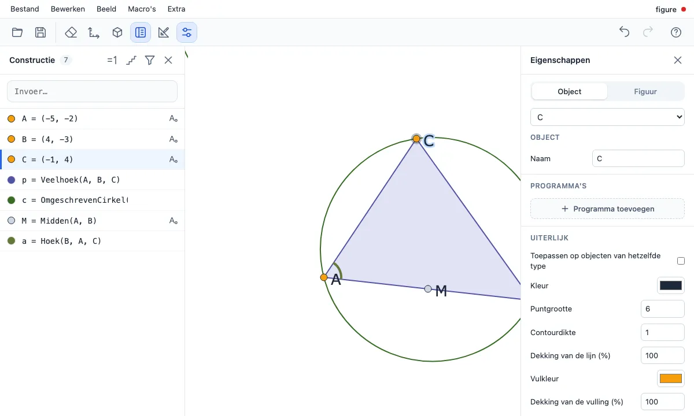
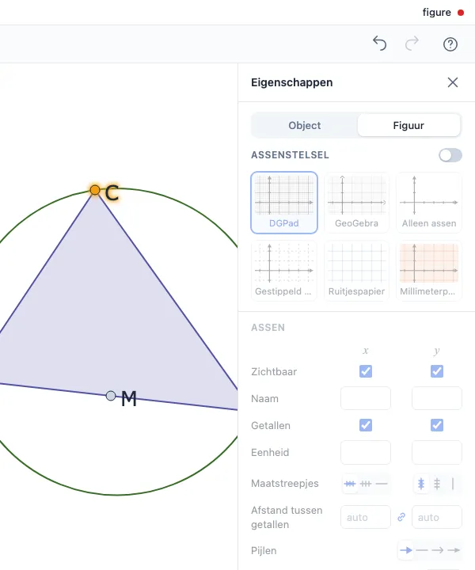

Eigenschappen en assenstelsel

Het paneel
- Geopend met of met in de contextzone; gesloten met zijn kruisje, dezelfde knop of Esc.
- Een rechterklik opent het op elk moment voor datgene waarnaar hij wijst: een object, zijn naam of zijn regel, de hele selectie als het object daartoe behoort, en het tabblad Figuur op een lege plek of op een as. Het actieve gereedschap behoudt zijn argumenten, en het paneel sluiten, bijvoorbeeld met Esc, brengt het palet terug als het paneel de plaats daarvan had ingenomen, met het gereedschap nog actief. Enige uitzondering: tijdens het definiëren van een macro doet een rechterklik niets.
- Het neemt de plaats in van het gereedschapspalet: het ene openen sluit het andere.
- Twee tabbladen: Object en Figuur.
- Het in te stellen object kies je in de figuur, via zijn regel of in de lijst „Kies een object…” (verborgen objecten inbegrepen). Een klik in de figuur selecteert in plaats van te construeren; knoppen en vakjes worden geselecteerd zonder te reageren. Een gereedschap uit het palet of de invoerregel construeren normaal, en het gemaakte object verschijnt in het paneel. Een geselecteerde zijde of hoekpunt van een veelhoek toont de instellingen van de veelhoek.
- Wijzigingen zijn onmiddellijk en kunnen ongedaan gemaakt worden.
- Getalvelden: horizontaal slepen stelt de waarde in (Shift: tien keer fijner), een klik laat je ze typen. Eén sleepbeweging telt als één stap van ongedaan maken.
- Een knop ↺ naast een kleur zet die terug op de standaardkleur van het gereedschap.
Het tabblad „Object”
| Sectie | Instellingen |
|---|---|
| Object | naam; bij een opdracht of uitdrukking de definitie |
| Programma's | van een punt of een uitdrukking: zijn schildpad en zijn gebeurtenisprogramma's, in blokken |
| Uiterlijk | toepassen op objecten van hetzelfde type, kleur, puntgrootte, lijndikte, contour, dekking van lijn en vulling, vulkleur, gestippeld, laag (tekenvolgorde) |
| Weergave |
object zichtbaar, naam tonen, object vast
(veelhoek), object inert, tekstgrootte,
decimalen van de waarde (of niet tonen; bij een
tekst die van zijn waarden
%formule%),
zichtbaar als, breedte
van het invoerveld
|
| Punt | vorm (cirkel, vierkant, kruis, ruit), positie van de naam in graden, spoor, horizontale en verticale stap (verplaatsing in sprongen) |
| Lijnstuk | markering (streepjes voor gelijke lengtes) |
| Hoek | straal van de boog, markering van de rechte hoek (open winkelhaak, boog, vierkant, punt, winkelhaak) |
| Meetkundige plaats, lijst | aantal punten; dikte van de lijnstukken |
| Schuifknop | stap, lengte, verticaal, kleur en grootte van de knop |
| Kader | van een afbeelding: kleur, dikte (0: geen kader), lijndekking, gestreept; haar dekking en laag blijven onder Uiterlijk |
| Animatie | snelheid (0: stop), omgekeerde richting, aan het uiteinde: opnieuw beginnen, heen en weer of stoppen |
Zichtbaar als
In de sectie Weergave: de naam van een uitdrukking, een formule
(m == 2) of niets. Het object is alleen zichtbaar
als ze waar is, en ze mag niet van het object zelf afhangen.
De regel van een selectievakje noemt de objecten waarvan het de voorwaarde is: een naam toevoegen verbindt het object met het vakje, een naam weghalen maakt het altijd zichtbaar. Het vakje verwijderen behoudt deze objecten, altijd zichtbaar.
Kleuren bij het maken
Een nieuw object krijgt de kleur van zijn soort: vrije punten en punten op een object oranje, geconstrueerde punten grijs, lijnstukken rood, rechten blauw, cirkels groen, veelhoeken indigo gevuld… Een nieuwe figuur heeft een witte achtergrond.
Meerdere objecten
Bij een meervoudige selectie worden alleen de instellingen getoond die alle objecten gemeen hebben; een waarde die van object tot object verschilt, staat grijs en cursief. Ctrl-klik, Shift-klik of lang drukken (figuur of paneel „Constructie”) voegen een object toe of nemen het weg.
Inerte objecten
Object inert: het object reageert niet meer op aanwijzen, klikken of aanraken. Het laat zich in de figuur niet meer verslepen of aanwijzen: de aanwijzer bereikt wat eronder ligt. Zolang het eigenschappenpaneel open is, is geen enkel object inert, zodat je het kunt selecteren en het vinkje weghalen.
Het tabblad „Figuur”

Een klik op een as opent dit tabblad.
| Sectie | Instellingen |
|---|---|
| Assenstelsel | zichtbaar of niet; sjablonen DGPad, GeoGebra, alleen assen, gestippeld rooster, ruitjespapier, millimeterpapier (alleen uiterlijk, geen zoom of achtergrond) |
| Assen (x en y) | zichtbaar, naam, getallen, eenheid (π: veelvouden van π/2), maatstreepjes, afstand tussen getallen (leeg: auto; 🔗 koppelt x en y), pijlen, kleur, grootte en vetheid van de getallen, stijl DGPad of GeoGebra, positieve halve assen |
| Rooster | zichtbaar of niet, afstand tussen lijnen, onderverdelingen, kleur (standaard die van de assen), dikte, lijn doorgetrokken, gestippeld of gestreept |
| Zoomen en verschuiven | as vast op het scherm, zoomen rond de oorsprong |
| Figuur | achtergrond; patroon, een afbeelding van de schijf, achter de hele figuur getekend (↺ verwijdert die), met de indeling: tegels, horizontaal of verticaal tegelen, gecentreerd, uitgerekt, vullen, passend; hoeken in graden (standaard) of radialen; lijnstukken boven veelhoeken |
Weergave vergrendeld (sectie Figuur): de weergave verschuift, zoomt en draait niet meer met de muis of de vinger.
Met meerdere weergaven stelt het tabblad de actieve weergave in: haar assenstelsel, assen, raster, vergrendeling, achtergrond en patroon zijn van haar alleen.
In 3D
| Sectie | Instellingen |
|---|---|
| Assen | assenkruis zichtbaar, kleur, lijndikte |
| Vloer | zichtbaar, kleur (↺: boven blauw, onder bruin), dekking, grootte, afstand, kleur en dikte van de lijnen |
| Weergave | perspectief |
Deze instellingen kunnen ongedaan gemaakt worden; zoomen, verschuiven en draaien van de weergave niet.